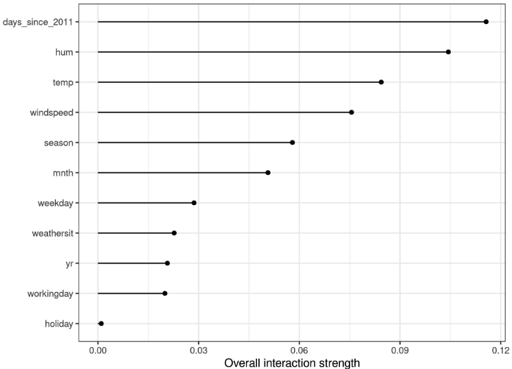
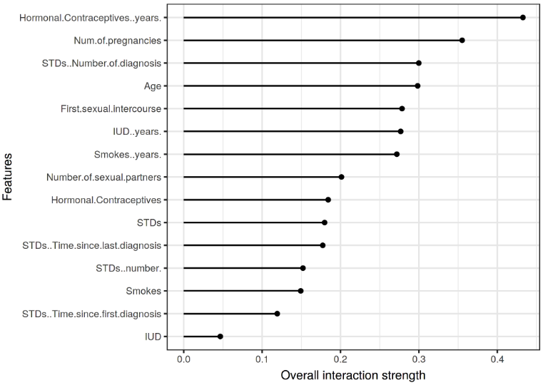
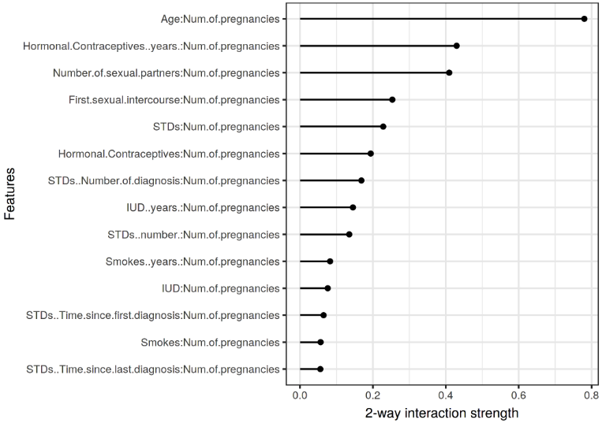

En cours de traduction.
8.3 - Interactions avec les fonctionnalités
Lorsque des fonctionnalités interagissent les unes avec les autres dans un modèle de prédiction, la prédiction ne peut pas être exprimée comme la somme des effets des fonctionnalités, car l’effet d’une fonctionnalité dépend de la valeur de l’autre fonctionnalité. Le prédicat d’Aristote « Le tout est plus grand que la somme de ses parties » s’applique en présence d’interactions.
8.3.1 Interaction des fonctionnalités ?
Si un modèle d’apprentissage automatique effectue une prédiction basée sur deux fonctionnalités, nous pouvons décomposer la prédiction en quatre termes : un terme constant, un terme pour la première fonctionnalité, un terme pour la deuxième fonctionnalité et un terme pour l’interaction entre les deux fonctionnalités. L’interaction entre deux caractéristiques est le changement dans la prédiction qui se produit en faisant varier les caractéristiques après avoir pris en compte les effets des caractéristiques individuelles.
Par exemple, un modèle prédit la valeur d’une maison, en utilisant comme caractéristiques sa taille (grande ou petite) et son emplacement (bon ou mauvais), ce qui donne quatre prédictions possibles :
| Location | Size | Prediction |
|---|---|---|
| good | big | 300,000 |
| good | small | 200,000 |
| bad | big | 250,000 |
| bad | small | 150,000 |
Nous décomposons la prédiction du modèle en parties suivantes : un terme constant (150 000), un effet pour la caractéristique de taille (+100 000 si grande ; +0 si petite) et un effet pour l’emplacement (+50 000 si bon ; +0 si mauvais). Cette décomposition explique pleinement les prédictions du modèle. Il n’y a pas d’effet d’interaction, car la prédiction du modèle est une somme des effets de caractéristiques uniques pour la taille et l’emplacement. Lorsque vous agrandissez une petite maison, la prédiction augmente toujours de 100 000, quel que soit l’emplacement. En outre, la différence de prédiction entre un bon et un mauvais emplacement est de 50 000, quelle que soit sa taille.
Regardons maintenant un exemple avec interaction :
| Location | Size | Prediction |
|---|---|---|
| good | big | 400,000 |
| good | small | 200,000 |
| bad | big | 250,000 |
| bad | small | 150,000 |
Nous décomposons le tableau de prédiction en parties suivantes : un terme constant (150 000), un effet pour la caractéristique de taille (+100 000 si grande, +0 si petite) et un effet pour l’emplacement (+50 000 si bon, +0 si mauvais). Pour ce tableau, nous avons besoin d’un terme supplémentaire pour l’interaction : +100 000 si la maison est grande et bien située. Il s’agit d’une interaction entre la taille et l’emplacement, car dans ce cas, la différence de prédiction entre une grande et une petite maison dépend de l’emplacement.
Une façon d’estimer la force de l’interaction consiste à mesurer dans quelle mesure la variation de la prédiction dépend de l’interaction des caractéristiques. Cette mesure est appelée statistique H, introduite par Friedman et Popescu (2008)1.
8.3.2 - Théorie : statistique H de Friedman
Nous allons traiter deux cas : premièrement, une mesure d’interaction bidirectionnelle qui nous indique si et dans quelle mesure deux caractéristiques du modèle interagissent entre elles ; deuxièmement, une mesure d’interaction totale qui nous indique si et dans quelle mesure une fonctionnalité interagit dans le modèle avec toutes les autres fonctionnalités. En théorie, des interactions arbitraires entre un nombre quelconque de caractéristiques peuvent être mesurées, mais ces deux cas sont les plus intéressants.
Si deux caractéristiques n’interagissent pas, nous pouvons décomposer la fonction de dépendance partielle comme suit (en supposant que les fonctions de dépendance partielles sont centrées sur zéro) :
\[PD_{jk}(x_j,x_k)=PD_j(x_j)+PD_k(x_k)\]
où \(PD_{jk}(x_j,x_k)\) est la fonction de dépendance partielle bidirectionnelle des deux caractéristiques et \(PD_j(x_j)\) et \(PD_k(x_k)\) les fonctions de dépendance partielle des caractéristiques uniques.
De même, si une fonctionnalité n’a aucune interaction avec aucune des autres fonctionnalités, nous pouvons exprimer la fonction de prédiction \(\hat{f}(x)\) comme somme de fonctions de dépendance partielles, où la première somme dépend uniquement de j et la seconde de toutes les autres caractéristiques sauf j :
\[\hat{f}(x)=PD_j(x_j)+PD_{-j}(x_{-j})\]
où \(PD_{-j}(x_{-j})\) est la fonction de dépendance partielle qui dépend de toutes les fonctionnalités à l’exception de la j-ème fonctionnalité.
Cette décomposition exprime la fonction de dépendance partielle (ou de prédiction complète) sans interactions (entre les caractéristiques j et k, ou respectivement j et toutes les autres caractéristiques). Dans une étape suivante, nous mesurons la différence entre la fonction de dépendance partielle observée et la fonction décomposée sans interactions. Nous calculons la variance de la sortie de la dépendance partielle (pour mesurer l’interaction entre deux fonctionnalités) ou de la fonction entière (pour mesurer l’interaction entre une fonctionnalité et toutes les autres fonctionnalités). L’ampleur de la variance expliquée par l’interaction (différence entre la PD observée et sans interaction) est utilisée comme statistique de force d’interaction. La statistique est 0 s’il n’y a aucune interaction et 1 si toute la variance du \(PD_{jk}\) ou \(\hat{f}\) s’explique par la somme des fonctions de dépendance partielles. Une statistique d’interaction de 1 entre deux caractéristiques signifie que chaque fonction PD est constante et que l’effet sur la prédiction ne résulte que de l’interaction. La statistique H peut également être supérieure à 1, ce qui est plus difficile à interpréter. Cela peut se produire lorsque la variance de l’interaction bidirectionnelle est supérieure à la variance du tracé de dépendance partielle bidimensionnel.
Mathématiquement, la statistique H proposée par Friedman et Popescu pour l’interaction entre les caractéristiques j et k est :
\[H^2_{jk} = \frac{\sum_{i=1}^n\left[PD_{jk}(x_{j}^{(i)},x_k^{(i)})-PD_j(x_j^{(i)}) - PD_k(x_{k}^{(i)})\right]^2}{\sum_{i=1}^n{PD}^2_{jk}(x_j^{(i)},x_k^{(i)})}\]
Il en va de même pour mesurer si une fonctionnalité j interagit avec une autre fonctionnalité :
\[H^2_{j}=\frac{\sum_{i=1}^n\left[\hat{f}(x^{(i)})-PD_j(x_j^{(i)})-PD_{-j}(x_{-j}^{(i)})\right]^2}{\sum_{i=1}^n\hat{f}^2(x^{(i)})}\]
La statistique H est coûteuse à évaluer, car elle itère sur tous les points de données et à chaque point, la dépendance partielle doit être évaluée, ce qui à son tour est effectué avec les n points de données. Dans le pire des cas, nous avons besoin de 2n 2 appels à la fonction de prédiction des modèles d’apprentissage automatique pour calculer la statistique H bidirectionnelle (j contre k) et de \(3n^2\) pour la statistique H totale (j contre tous). Pour accélérer le calcul, nous pouvons échantillonner à partir des n points de données. Cela présente l’inconvénient d’augmenter la variance des estimations de dépendance partielle, ce qui rend la statistique H instable. Donc, si vous utilisez l’échantillonnage pour réduire la charge de calcul, assurez-vous d’échantillonner suffisamment de points de données.
Friedman et Popescu proposent également une statistique de test pour évaluer si la statistique H diffère significativement de zéro. L’hypothèse nulle est l’absence d’interaction. Pour générer la statistique d’interaction sous l’hypothèse nulle, vous devez être capable d’ajuster le modèle afin qu’il n’y ait aucune interaction entre les caractéristiques j et k ou toutes les autres. Cela n’est pas possible pour tous les types de modèles. Par conséquent, ce test est spécifique au modèle, et non indépendant du modèle, et n’est donc pas abordé ici.
La statistique de force d’interaction peut également être appliquée dans un cadre de classification si la prédiction est une probabilité.
8.3.3 - Exemples
Voyons à quoi ressemblent les interactions entre fonctionnalités dans la pratique ! Nous mesurons la force d’interaction des caractéristiques dans une machine à vecteurs de support qui prédit le nombre de vélos loués en fonction des caractéristiques météorologiques et calendaires. Le graphique suivant montre la statistique H de l’interaction des fonctionnalités :

Dans l’exemple suivant, nous calculons la statistique d’interaction pour un problème de classification. Nous analysons les interactions entre les caractéristiques d’une forêt aléatoire formée pour prédire le cancer du col de l’utérus, compte tenu de certains facteurs de risque.

Après avoir examiné les interactions de chaque fonctionnalité avec toutes les autres fonctionnalités, nous pouvons sélectionner l’une des fonctionnalités et approfondir toutes les interactions bidirectionnelles entre la fonctionnalité sélectionnée et les autres fonctionnalités.

8.3.4 - Avantages
La statistique H d’interaction a une théorie sous-jacente à travers la décomposition de dépendance partielle.
La statistique H a une interprétation significative : l’interaction est définie comme la part de variance expliquée par l’interaction.
Étant donné que la statistique est sans dimension, elle est comparable entre les fonctionnalités et même entre les modèles.
La statistique détecte toutes sortes d’interactions, quelle que soit leur forme particulière.
Avec la statistique H, il est également possible d’analyser des interactions arbitraires plus élevées telles que la force d’interaction entre 3 caractéristiques ou plus.
8.3.5 - Inconvénients
La première chose que vous remarquerez : la statistique H d’interaction prend beaucoup de temps à calculer, car elle est coûteuse en calcul.
Le calcul implique l’estimation des distributions marginales. Ces estimations présentent également une certaine variance si nous n’utilisons pas tous les points de données. Cela signifie que lorsque nous échantillonnons des points, les estimations varient également d’une exécution à l’autre et les résultats peuvent être instables. Je recommande de répéter le calcul de la statistique H plusieurs fois pour voir si vous disposez de suffisamment de données pour obtenir un résultat stable.
Il n’est pas clair si une interaction est significativement supérieure à 0. Il faudrait effectuer un test statistique, mais ce test n’est pas (encore) disponible dans une version indépendante du modèle.
Concernant le problème de test, il est difficile de dire quand la statistique H est suffisamment grande pour que l’on considère une interaction « forte ».
De plus, la statistique H peut être supérieure à 1, ce qui rend l’interprétation difficile.
Lorsque l’effet total de deux caractéristiques est faible, mais consiste principalement en interactions, la statistique H sera très grande. Ces interactions parasites nécessitent un petit dénominateur de la statistique H et sont aggravées lorsque les caractéristiques sont corrélées. Une interaction parasite peut être facilement surinterprétée comme un effet d’interaction fort, alors qu’en réalité les deux caractéristiques jouent un rôle mineur dans le modèle. Une solution possible consiste à visualiser la version non normalisée de la statistique H2, qui est la racine carrée du numérateur de la statistique H 36 . Cela met la statistique H au même niveau que la réponse, au moins pour la régression, et met moins l’accent sur les interactions parasites.
\[H^{*}_{jk} = \sqrt{\sum_{i=1}^n\left[PD_{jk}(x_{j}^{(i)},x_k^{(i)})-PD_j(x_j^{(i)}) - PD_k(x_{k}^{(i)})\right]^2}\]
La statistique H nous indique la force des interactions, mais elle ne nous dit pas à quoi ressemblent ces interactions. C’est à cela que servent les parcelles de dépendance partielle. Un flux de travail significatif consiste à mesurer les forces d’interaction, puis à créer des tracés de dépendance partielle en 2D pour les interactions qui vous intéressent.
La statistique H ne peut pas être utilisée de manière significative si les entrées sont des pixels. La technique n’est donc pas utile pour le classificateur d’images.
La statistique d’interaction fonctionne sous l’hypothèse que nous pouvons mélanger les fonctionnalités indépendamment. Si les caractéristiques sont fortement corrélées, l’hypothèse est violée et nous intégrons des combinaisons de caractéristiques qui sont très improbables en réalité. C’est le même problème que rencontrent les parcelles de dépendance partielle. Les caractéristiques corrélées peuvent conduire à des valeurs élevées de la statistique H.
Parfois, les résultats sont étranges et pour de petites simulations, ils ne donnent pas les résultats escomptés. Mais il s’agit là plutôt d’une observation anecdotique.
8.3.6 - Implémentations
Pour les exemples de ce livre, j’ai utilisé le package R iml, disponible sur CRAN et la version de développement sur GitHub. Il existe d’autres implémentations, qui se concentrent sur des modèles spécifiques : Le package R pre implémente RuleFit et H-statistic. Le package R gbm implémente des modèles améliorés par gradient et la statistique H.
8.3.7 - Alternatives
La statistique H n’est pas le seul moyen de mesurer les interactions :
Les réseaux d’interaction variable (VIN) de Hooker (2004)3 37 sont une approche qui décompose la fonction de prédiction en effets principaux et interactions de fonctionnalités. Les interactions entre les fonctionnalités sont ensuite visualisées sous forme de réseau. Malheureusement, aucun logiciel n’est encore disponible.
Interaction de fonctionnalités basée sur une dépendance partielle par Greenwell et al. (2018)4 38 mesure l’interaction entre deux fonctionnalités. Cette approche mesure l’importance des caractéristiques (définie comme la variance de la fonction de dépendance partielle) d’une caractéristique en fonction de points fixes différents de l’autre caractéristique. Si la variance est élevée, alors les caractéristiques interagissent les unes avec les autres, si elle est nulle, elles n’interagissent pas. Le package R correspondant vip est disponible sur GitHub. Le package couvre également les tracés de dépendance partielle et l’importance des fonctionnalités.
Notes de bas de page
Friedman, Jerome H, and Bogdan E Popescu. “Predictive learning via rule ensembles.” The Annals of Applied Statistics. JSTOR, 916–54. (2008).↩︎
Inglis, Alan, Andrew Parnell, and Catherine Hurley. “Visualizing Variable Importance and Variable Interaction Effects in Machine Learning Models.” arXiv preprint arXiv:2108.04310 (2021).↩︎
Hooker, Giles. “Discovering additive structure in black box functions.” Proceedings of the tenth ACM SIGKDD international conference on Knowledge discovery and data mining. (2004).↩︎
Greenwell, Brandon M., Bradley C. Boehmke, and Andrew J. McCarthy. “A simple and effective model-based variable importance measure.” arXiv preprint arXiv:1805.04755 (2018).↩︎